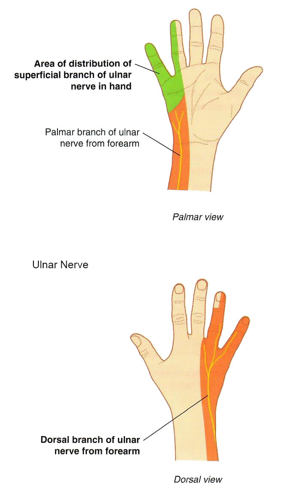

Lab3 - Module 2 - Anatomy of the Arm and Forearm: Page 9 of 11
Anterior Nerves of the Forearm
 |
| Tap on image to enlarge |
|
The Articular branches to the elbow joint. The Muscular branches to supply flexor carpi ulnaris and the medial half of the flexor digitorum profundus. The Superficial branch (palmar cutaneous branch) supplies the skin of the medial palm and medial 1 ½ digits. The Dorsal cutaneous branch supplies the posterior surface of the medial part of the hand and medial 1 ½ digits. |
| Ulnar Nerve Injury may result in extensive motor and sensory loss to the hand. Patients may have difficulty in making a fist due to inability to flex their fourth and fifth digits at the distal interphalangeal joints. The appearance of the hand is then known as claw hand. | 
Is the Ulnar nerve effected by a Carpal Tunnel Syndrome? |
|
|
Near the pisiform bone it pierces the deep fascia and passes superficial to the flexor retinaculum. Therefore it does not pass through the Carpal Tunnel 
|
|